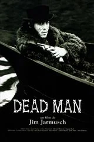
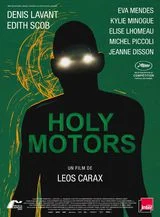
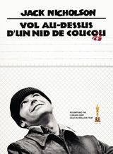
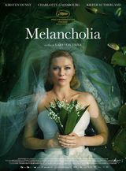
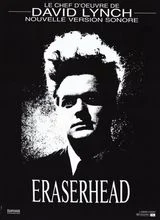
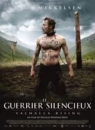

Nous contacter :
Association "Les films de plein air"
17 rue de la Cadoule
75011 Paris
06 06 06 06 06


Enter the void
2 h 41 min. Sortie : 5 mai 2010. Drame et fantastique.
Film de Gaspard Noe :
Oscar et sa sœur Linda habitent depuis peu à Tokyo. Oscar survit de petits deals de drogue alors que Linda est stripteaseuse dans une boîte de nuit. Un soir, dénoncé par un de ses clients et ami, Oscar est abattu par la police dans les toilettes d'un bar. Alors que son âme se détache de son corps, Oscar se souvient de sa promesse jadis faite à sa sœur de ne jamais l'abandonner. Commence alors une longue errance de l'esprit à travers Tokyo…

Dead Man
2 h 01 min. Sortie : 23 décembre 1995. Aventure, drame, fantastique.
Film de Jim Jarmusch :
Deuxième moitié du XIX° siècle. En fuite après avoir assassiné un homme, le comptable William Blake rencontre un étrange Amérindien nommé Nobody qui le prépare pour son voyage dans le monde spirituel.

Holy Motors
1 h 55 min. Sortie : 4 juillet 2012. Drame et fantastique.
Film de Leos Carax :
De l'aube à la nuit, quelques heures dans l'existence de Monsieur Oscar, un être qui voyage de vie en vie. Tour à tour grand patron, meurtrier, mendiante, créature monstrueuse, père de famille... M. Oscar semble jouer des rôles, plongeant en chacun tout entier - mais où sont les caméras ? Il est seul, uniquement accompagné de Céline, longue dame blonde aux commandes de l'immense machine qui le transporte dans Paris et autour. Tel un tueur consciencieux allant de gage en gage. À la poursuite de la beauté du geste. Du moteur de l'action. Des femmes et des fantômes de sa vie. Mais où est sa maison, sa famille, son repos ?

Vol au dessus d'un nid de coucou
2 h 13 min. Sortie : 21 novembre 1975. Drame.
Film de Miloš Forman :
Pour échapper à la prison, Randall P. McMurphy se fait volontairement interner dans une clinique psychiatrique. Il y découvre injustice et oppression.

Melancholia
2 h 10 min. Sortie : 26 mai 2011. Drame et science-fiction.
Film de Lars Von Trier :
À l'occasion de leur mariage, Justine et Michael donnent une somptueuse réception dans la maison de la soeur de Justine et de son beau-frère.

Eraserheard
1 h 29 min. Sortie : 28 septembre 1977. Expérimental, Épouvante-horreur et fantastique.
Film de David Lynch :
Un homme est abandonné par son amie qui lui laisse la charge d'un enfant prématuré, fruit de leur union. Il s'enfonce dans un univers fantasmatique pour fuir cette cruelle réalité.

Le Guerrier silencieux - Valhalla Rising
1 h 30 min. Sortie : 5 mars 2010. Drame, fantasy et aventure.
Film de Nicolas Winding Refn :
One-Eye, un guerrier muet et sauvage, était fait prisonnier. Grâce à l'aide d'Are, il parvient à tuer son geôlier et ensemble ils s'échappent.
Enemy
1 h 27 min. Sortie : 14 mars 2014. Thriller.
Film de Denis Villeneuve :
Adam mène une vie paisible avec sa fiancée Mary. Un jour, il découvre son sosie parfait en la personne d’Anthony et il ressent un trouble profond.
Association "Les films de plein air"
17 rue de la Cadoule
75011 Paris
06 06 06 06 06